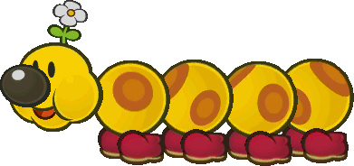
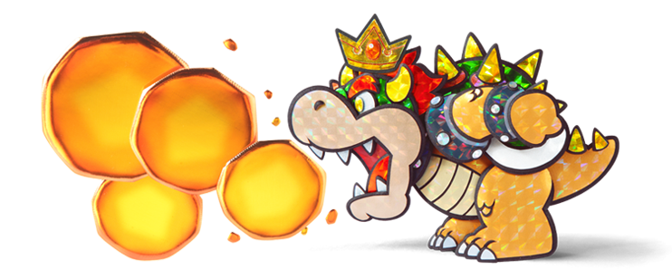

Paper Mario: Sticker Star is where the series fell off for a LOT of people. It is often criticized for its lack
of experience points for battling, the lack of interesting characters, and the lack of a compelling story. The
game is for sure not as good as the others in the series in my opinion, but it does have its good parts too.
Plot
The story begins on the night of the annual Sticker Fest, which celebrates
the yearly
passing of the Sticker Comet. The Sticker Comet is said to be able to grant people's wishes.
Once the Sticker Comet comes around, Bowser crashes the festival and tries to take the
Sticker Comet for himself. The second he touches it, the Sticker Comet gets split into 6
Royal Stickers, which are each in the shape of a crown. One of the Royal Stickers lands on
Bowser's head, granting him immense sticker power, which he then uses to wreck the Sticker
Festival after Mario tries and fails to stop him.
Gameplay
Battle System
The
battle system in Paper Mario: Sticker Star harkens back to the original two games in
some ways while putting its own spin on things as well. First off, the combat is back to
being turn-based instead of real-time like in Super Paper Mario. The first major difference
is that, in order for Mario to attack, he needs to use disposable stickers he
picks up in
the overworld. The sticker you choose determines what move you do. Once you use up a
sticker, it is gone. This can add an element of risk and reward, as you tend to save your
more powerful stickers for just the right moment, and you may have to change up your go-to
strategy if you don't have the sticker in mind. There are quite a few mechanics that Sticker
Star has removed from its predecessors' battle systems. The most prominent of these is the
lack of experience points earned when defeating enemies in battle. This led
to a lot of
complaints from fans, as there is now little to no incentive to go out of your way to
battle. On top of that, the only thing that really comes out of battling is wasting
stickers. Another big removal is the lack of the ability to choose an enemy
to target. Mario
will always default to attacking the first enemy in line. This removes quite a bit of
strategy that made the previous games' battle systems so fun and engaging. The third and
final major removal from the battle system is the lack of partners to fight
by your side.
Mario only has one partner throughout the whole game, and she does not participate in
battle. This also removes quite a bit of strategy and engagement and decreases the
variability that the player can have in their approach to battling.
Despite this, personally, when I play the game, I quite enjoy the battle system for what it
is. Having to think on your feet based on what stickers you have available can
be a fun
challenge to do in every battle. I also find myself incentivized to battle because
it
spends my stickers. One of my favourite parts of this game is collecting the massive amount
of stickers you can find all over the world. But eventually, my stickerbook gets too
full and I have to ignore a bunch of stickers that I pass. Battling helps me maintain a
steady inflow and outflow of stickers, keeping me engaged in both aspects of the gameplay.
Overworld
As with
the battle system, the overworld gameplay is more similar to that of Paper Mario 64
and TTYD, taking a more 2.5D
perspective, instead of being a pure 2D platformer like Super Paper Mario. Similar to the
first two games, there is a healthy combination of enemies to fight, puzzles to solve, and
a bit of platforming thrown in as well. The main new activity, as I mentioned, is
picking up stickers that are scattered all over the place. I find this keeps
me very
engaged in the
overworld gameplay, and I always get a rush of excitement when I see a sticker I haven't
seen before. In addition to stickers, Mario can occasionally come across real-world objects,
like scissors for example, called Things. Mario can convert these Things into
stickers,
which can then be used in either combat as a super-powerful move, or in
the overworld to
solve puzzles. To use stickers in the overworld, Mario's partner, Kersti, grants him the
ability to Paperize. Paperizing involves Mario leaving the world, and looking
at it like a
storybook. Once here, Mario can stick stickers onto the world just as one could do to a
real-life storybook. The ability to paperize gives the game a lot of
creative freedom with
solutions to puzzles, sometimes allowing for more than one solution to a given problem.
More
often than not though, Mario requires one specific Thing sticker to get the job done. While
it can be satisfying to guess the right sticker, more often than not it can
get
frustrating. The main reason is that after guessing wrong when paperizing, the sticker gets
wasted anyways. This can lead to a ton of unwanted back-and-forth gameplay that could have
otherwise been avoided.
World Map
One major change from the previous three Paper Mario games that Sticker Star makes is the
addition of a world map, as opposed to one large interconnected world. Each
chapter is
comprised of multiple levels, connected solely by this world map. This was
most likely done
to accommodate the handheld platform that this game was on, but it can lead to breaks in
immersion. It is very cool to be able to travel seamlessly across the world in
the first
three games. Having the world map isn't deal-breaking, but it makes the chapters
feel more
disjointed and less like one single environment. One thing that I do like about it is
that it makes backtracking easier, and less of a hassle. Sometimes the game uses this to its
benefit, utilizing levels multiple times for various purposes like retrieving items or going
through a path that you could not before.
Partners
Kersti
Kersti is the guardian of the sticker comet. She was sent to help secure the Royal Stickers
by the Sticker Comet just before Bowser touched it. When Mario first finds her, it becomes
instantly clear that she's a bit of a hothead. Without warning, she just starts yelling at
Mario, assuming he was the one who touched the comet. After he explains what actually
happened, she
calms
down and agrees to join him on his journey. She is honestly not the most likable partner in
the world. She loses her temper easily and is overall just not pleasant to be honest. She
provides Mario the ability to paperize in the overworld. In battle, she gives
him the
battle spinner, which Mario can pay coins to use. If he is lucky with the
spinner,
he gains
access to extra sticker slots, allowing him to use multiple stickers in one turn.
Chapters
Prologue: Decalburg
After Bowser crashed the Sticker Fest, Mario wakes up to a complete mess! The
Sticker Fest
has been completely destroyed, and Princess Peach is missing! Pretty much as soon as Mario
gets up to look around, he runs into Kersti,
who yells at him and then joins him. The first thing Mario notices is that there are toads
scattered about all over the place. So, Mario takes it upon himself to find and rescue all
the toads, who then work together to unravel the main town of the game,
Decalburg. Mario
then battles three goombas within Decalburg, which teaches him about the battle system.
Ruined Sticker Fest
Decalburg
Toads Pushing Decalburg Open
Chapter 1: Warm Fuzzy Plains{6 Levels}
This chapter is all about exploring the grassy lands called the
Warm Fuzzy Plains. The first
two levels are spent going through this area, saving toads, battling goombas, and getting a
whole bunch of stickers. In the first level, Mario fights Bowser Jr. He defeats him by
using
the scissors Thing sticker. Level 3 takes Mario back to his plumbing roots and requires him
to use a faucet Thing sticker to fix a broken pipe system. Mario then scales
a
grassy mountain,
called Whammino Mountain, in Level 5, which is a very fun level with lots of
verticality.
And then finally, Level 6 takes Mario to the Goomba Fortress. The fortress is
not terribly
long, but is fun to puzzle your way through nonetheless, and is much more interesting than
the standard grassy plain levels. When Mario reaches the end of the fortress, he encounters
the Megasparkle Goomba, who has the first Royal
Sticker. If you are not
familiar with using Thing stickers in battle, this one can be quite a challenging first
boss, as the game intends for you to use Thing stickers to blast his health away, but this
is not always clear. After defeating the Megasparkle Goomba, Mario recovers the first Royal
Sticker and concludes the chapter.
Warm Fuzzy Plains
Whammino Mountain
Goomba Fortress
Chapter 2: Drybake Desert{5 Levels}
As you may have guessed, Chapter 2 takes place exclusively in a desert, called
Drybake Desert. Throughout each level, Mario has to solve tricky puzzles to
obtain
pieces of the
last level in order to paperize and construct the final level and then beat it. Level 1 is
just spent traversing the sandy dunes and fighting sand-related enemies
like Pokeys and Spinies. Level 2 is a very good level where you get to explore the
Yoshi Sphinx. It's a very fun area to explore, with many branching paths
leading to
secret areas.
At the top of the Yoshi Sphinx, Mario encounters Kamek,who is a recurring miniboss
in this
game where he transforms all of Mario's stickers into flip-flops. These boss fights are
tricky because you have to remember where your not-so-good stickers are so that you do not
end up wasting a really good sticker while it was transformed into a weak flip-flop. After
this, Level 3 takes Mario to an underground ruin called the
Sandshifter Ruins. The ruins are
effectively a glorified pachinko machine, where Mario has to choose different places to jump
down to reach different areas. It can be a bit tedious to travel
through, but not too bad.
Level 4 takes Mario to a dried-out oasis, called the Damp Oasis. It is
currently enveloped
in a powerful vortex, which Mario uses the vaccuum Thing sticker to clean up, and then the
faucet Thing sticker to refill the oasis. Finally, after collecting all the pieces of the
level, Level 5 sees Mario climbing to the top of the Drybake Stadium. The
Drybake Statium is
a multi-level, puzzle-based dungeon in which Mario has to solve many puzzles to do with
paperizing. After reaching the top, Mario finds the Tower Power Pokey. The
key to defeating
this one is using the baseball bat Thing sticker to hit each of its sections away, dealing
massive damage to it.
Drybake Desert
Yoshi Sphinx
Sandshifter Ruins
Damp Oasis
Drybake Stadium
Drybake Stadium (Inside)
Chapter 3: The Bafflewood{12 Levels}
Chapter 3 takes place inside a lush dank forest, called The Bafflewood. It
begins with Mario
meeting a very friendly Wiggler. Soon after, Wiggler gets split apart by Kamek's magic,
causing each of his segments to run away into various parts of the forest. Mario is thus
tasked with tracking down each Wiggler segment and return them to Wiggler.
This chapter is
incredibly long, as every time Mario finds a segment, they run off a second time, forcing
Mario to find each of them a second time, which becomes very tedious. Some standout levels
are Levels 7 and 10. In Level 7, Mario falls down a large hole, into the gave called
Rustle Burrow, and drops all of his
belongings, including his hammer, stickers, and Kersti herself. The stickers you had get
scattered all across the cave, and Mario spends the level finding them all. This level is
very cool because you start from nothing, struggling through every battle, and then by the
end, after getting all your stickers back, you feel extremely powerful in comparison to how
you first were. Level 10 is iconic because in it Mario participates in the game show,
Snifit or Whiffit. This is a very fun part of the game, and very memorable
for its humour. It can
also be a fun challenge. After finding all of Wiggler's segments, Mario rides on him
across the sea to find the source of the poison that had been infecting the waters of
the
forest. Once there, Mario finds out that the source of the poison was the
Gooper Blooper,
who had the next Royal Sticker. This boss is actually impossible if you do
not have the Thing sticker that is required for it, being the sponge. The sponge is used to
defend Mario from an incoming poison shot from the Gooper Blooper. Once defeated, the Gooper
Blooper drops the Royal Sticker, and Mario recovers it.
The Bafflewood
Rustle Burrow
Snifit or Whiffit
Chapter 4: Snow Rise{5 Levels}
Chapter 4 is themed around snow. In addition to that, within the snowy levels, you begin to
encounter shiny stickers in the overworld, which are more powerful versions of the stickers
you get before this area. Some of the enemies you encounter are also shiny. Thus, this is
the chapter where things step up in difficulty a little bit, with both stronger enemies to
face and stronger stickers to use. Level 1, taking place in the Snow Rise, is
enjoyable to play through
for this reason. It's cool to feel a sense of levelling up in your adventure, albeit a small
one. Then, after Level 2, which is another fairly standard
snow level, we arrive at Level 3, The Enigmansion. The Enigmansion might just
be the best
level in the game. Basically, you explore this large mansion effectively becoming a
ghostbuster. You have to hunt down every last Boo in the mansion, which is extremely fun to
do. Some of them are pretty well hidden too! There's one moment where you get to use the
infini-jump sticker
on
a massive stack of boos, which lets you do as many jumps as you can
time correctly, with no limit! It's super fun to do. After this level, we have a level
that's more of a minigame, where Mario rides a ski-lift in
Whiteout Valley to go
further up the mountain.
It's not a
long level, but is fun for what it is. And finally, Mario arrives at Level 6, which is
Bowser's Snow Fort. This level begins with Mario waiting patiently in line to
go on a
minecart ride. Then, the minecart ride itself is something straight out of Donkey Kong,
having you timing jumps to clear gaps, as well as properly timing
Paperizations to progress.
After the minecart ride, Mario starts getting attacked by this giant snow sculpture of
Bowser. As Mario battles it, he starts to reveal who is controlling it, being
Mizzter Blizzard the Snowman. After defeating him, Mario retrieves the next
Royal Sticker from him,
ending the chapter.
Snow Rise
The Enigmansion
The Enigmansion (Inside)
Whiteout Valley Ski Lift
Bowser's Snow Fort
Bowser's Snow Fort Lineup
Chapter 5: Shy Guy Jungle{6 Levels}
Up next is Chapter 5, which takes Mario to a jungle-themed chapter. He begins with Level 1,
in the Shy Guy Jungle. It's a fairly long level where Mario has to chase down
three Spear
Guys who have stolen pieces of the bridge forward. After this, Mario spends the next two
levels river-rafting down the Jungle Rapids. In Level 3 specifically, Mario
gets chased down
by a giant Cheep-Chomp. After this, Mario arrives at the Chomp Ruins in Level
4, which is
another one of my favourite levels of the game. The battles that take place in this level
are some of the best, and the ruins themselves are a joy to play through. In the
final two
levels, Mario hot-foots it into the Rumble Volcano, which is a dangerous
place filled
with
tough enemies and tough puzzles. I got stuck in the Rumble Volcano for a while on my first
playthrough. Once you reach the end, Mario finds one of his oldest nemeses,
Petey Piranha,
who has the fifth Royal Sticker. After defeating Petey Piranha, Mario secures the next Royal
Sticker, ending the chapter.
Shy Guy Jungle
Jungle Rapids
Chomp Ruins
Rumble Volcano
Chapter 6: Bowser's Sky Castle{2 Levels}
Chapter 6 is the finale of the game. We only have two levels, and they aren't overly long.
There's no big huge final dungeon, which is a bit of a shame. Instead, Level 1 takes us
aboard Bowser Jr's Fiery Flotilla, which is his airship. Mario gets help from
the Wiggler
from Chapter 3, who has now transformed into a Flutter (a Wiggler butterfly).Once aboard,
Mario does some battling and puzzling and then battles Bowser Jr. one last time. After
this, Mario heads into Bowser's Sky Castle to face Bowser and recover the
final Royal
Sticker once and for all. But before he does, Mario battles Kamek one last time as well,
with his stickers being temporarily turned into flip-flops again too. After this, Mario
jumps straight into the fight with Bowser, with very little buildup. Fighting
him can be
quite frustrating as well to be honest. Where every boss has required one Thing sticker
to be the solution to it Bowser has multiple phases, each with their own Thing sticker
solution. Your skills and sticker management don't really feel like they come into play
until
the final phase when Bowser grows giant. This portion of the fight is quite enjoyable and
makes me wish more of the fight was as good. Partway through this phase, Kersti decides to
sacrifice herself to give Mario an extra boost in sticker power so that he
can deal enough
damage to keep up with Bowser. This sacrifice would be emotional if Kersti was actually
likable, but alas, it was a good try. After Mario triumphs over Bowser, he
rescues Peach and
the final Royal Sticker. With all the Royal Stickers assembled, Mario has the power to grant
himself one wish. And what does he do but waste it on reviving Kersti :)

 {5 Levels}
{5 Levels}